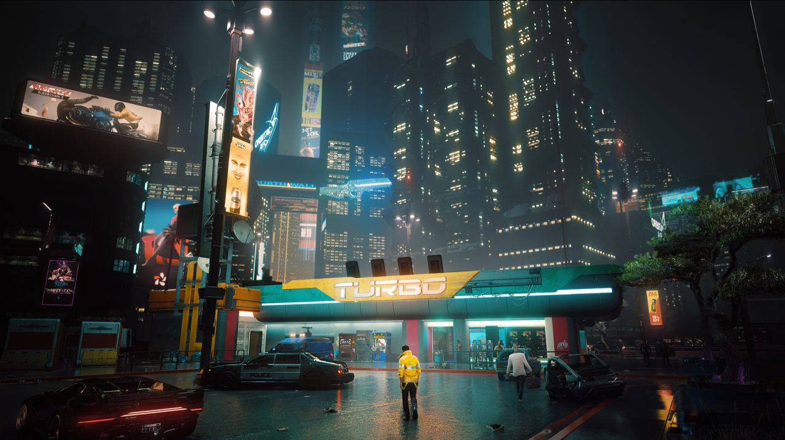

"Cyberpunk 2077" to tytuł, który nie miał łatwo na premierę. Liczne błędy i bugi,
niezadowolenie graczy spowodowane słabą optymalizacją gry, a także tragicznie działające wersje konsolowe.
Na szczęście twórcy nie porzucili produkcji i wciąż regularnie naprawiali błędy, patchowali i rozwijali grę.
Po około dwóch latach prac w końcu wypuścili aktualizację, która, jak sami nazwali miała pokazać, jak gra miała wyglądać na premierę.

Dodatkowo zakończyli pracę nad rozszerzeniem do gry o nazwie "Widmo wolności", które dodało dużą ilość kontentu, nową fabułę i wiele innych atrakcji.
Moim zdaniem jest to jedna z najlepszych gier akcji, w jakie grałem w życiu.
Dzieje się bardzo dużo, fabuła jest wciągająca, ścieżka dźwiękowa wpada w ucho od samego menu startowego,
oprawa graficzna jest oszałamiająca, jest także bardzo dużo możliwości rozwoju postaci, którą gramy.
Jako jedna z głównych postaci pojawia się Johnny Silverhand, którego gra sam uwielbiany przez fanów Keanu Reeves.

Uważam, że jest to tytuł, który warto sprawdzić, jeśli jest się fanem tego gatunku, ponieważ na prawdę warto.
Moim zdaniem jest to jedna z najlepszych i najbardziej wciągających gier, w jakie grałem.